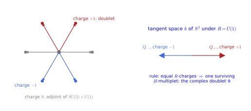
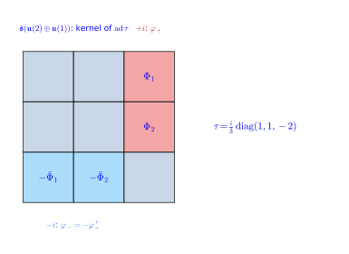

Symmetric fields and their constraints
Coset space dimensional reduction (CSDR) starts from a gauge theory on a product M_4 \times S/R of spacetime with a coset space, and keeps not the fields that are independent of the internal coordinates but those that are symmetric: invariant under the isometries of the coset up to a gauge transformation. Because the action of the isometry group on such fields is a gauge transformation, the Lagrangian evaluated on them is the same at every internal point, and integrating over the coset gives an honest four-dimensional theory whose solutions are solutions of the higher-dimensional one. The price is a set of algebraic constraints on the fields, which depend on how the isotropy group R of the coset is embedded in the gauge group G; their solution decides which gauge fields and which scalars survive in four dimensions. This chapter has two sections. Symmetric fields and the CSDR constraints defines symmetric gauge fields, splits them into a four-dimensional gauge field and internal scalars, states the constraints those satisfy and the representation-theoretic rules that solve them, and checks the matching of charges for the running example. The embedding of U(1) in SU(3) fixes that example: the sphere S^2 = SO(3)/SO(2) \cong SU(2)/U(1), the gauge group SU(3), and the isotropy U(1) embedded along the hypercharge direction \lambda_8; it computes the eigenspaces of the embedded generator and identifies the four-dimensional gauge group SU(2) \times U(1). The next chapter solves the constraints and derives the Higgs potential. Every statement is followed by three examples and three exercises with folded solutions, and the chapter ends with three integrative exercises.
The construction goes back to Forgács and Manton (Forgács and Manton 1980) and to Harnad, Shnider and Vinet (Harnad et al. 1980), who stated the invariance conditions for gauge fields under a group acting on a principal bundle. It was soon used for model building: Chapline and Manton gave the geometric meaning of the resulting Higgs potentials (Chapline and Manton 1981), and unified models broken towards the standard model (Bais et al. 1986), dynamical symmetry breaking (Forgacs and Zoupanos 1984) and the reduction of ten-dimensional E_8 gauge theory over coset spaces (Lust and Zoupanos 1985) followed. The reviews Kapetanakis and Zoupanos (1992) and Manolakos and Zoupanos (2016) and the monograph Kubyshin et al. (1989) cover the subject in depth.
Symmetric fields and the CSDR constraints
Coset space dimensional reduction keeps, instead of the fields independent of the internal coordinates, the fields that are symmetric: invariant under the isometries of the coset up to a gauge transformation. The Lagrangian evaluated on such fields does not depend on the internal point, so it is an honest four-dimensional Lagrangian, and the consistency problem of The reduced theory and the consistency problem disappears for the fields kept. This section defines symmetric gauge fields, derives the constraints they satisfy and the rules that solve them, following Manolakos and Zoupanos (2016, sec. 2, eqs. 2-13) and Kubyshin (2003, secs. 2–3), before the running example of Part V, SU(3) over S^2 = SU(2)/U(1), is worked out in the rest of this chapter and the next. It has four subsections: symmetric gauge fields, the constraints on the reduced fields, the counting rules, and the matching of charges for the running example.
Symmetric gauge fields
A gauge field on a space with symmetries can be asked to be invariant, but for a gauge field invariance is too strong a requirement: two potentials that differ by a gauge transformation describe the same physics. The definition below asks only that each isometry act on the field as some gauge transformation, which is the right notion of symmetry for a gauge theory.
Definition 1 (Symmetric gauge field) Let S act on M_4 \times S/R by its left action on the coset (Definition 2 of Homogeneous spaces and fibre bundles), with Killing vectors \xi_A, A = 1, \dots, \dim S. A gauge field \hat A with gauge group G on M_4 \times S/R is symmetric if every S-transformation of it is a gauge transformation: for each generator there is a G-valued function W_A(y) with \mathcal{L}_{\xi_A}\hat A_\alpha = \partial_\alpha W_A - [W_A, \hat A_\alpha] , \tag{1} the infinitesimal gauge transformation Equation 4 of Homogeneous spaces and fibre bundles with parameter W_A (Manolakos and Zoupanos 2016, eq. 3; Kubyshin 2003, eq. 17). Scalars and spinors are symmetric when \mathcal{L}_{\xi_A}\phi = D(W_A)\phi in their representation (Manolakos and Zoupanos 2016, eqs. 2 and 4).
Veriphy. Pending.
Lean. Pending.
Sage. Pending.
The simplest symmetric fields are those for which the compensating gauge transformation is not needed at all. The first example records this case and explains why it is too restrictive on a sphere.
Example 1 (Strictly invariant fields) W_A = 0: the field is invariant under the isometries, \mathcal{L}_{\xi_A}\hat A = 0, which for the circle is the cylinder condition of Definition 1 of The Kaluza-Klein reduction. On a sphere the only strictly invariant fields are trivial, and the compensating gauge transformations are essential.
The magnetic monopole is the standard example of a field that is symmetric without being invariant. Its potential cannot be rotation invariant, since no potential of a monopole is globally defined, but each rotation changes it only by a gradient.
Example 2 (The monopole) The U(1) potential A = \cos\theta\,d\varphi of the Hopf fibration (Definition 23 of Homogeneous spaces and fibre bundles) is not invariant under rotations, but rotating it changes it by a gradient: it is a symmetric gauge field with W_A \neq 0, the first example of the construction (Kubyshin 2003, eq. 32).
The reason for the definition is what it does to the Lagrangian. The third example shows that a symmetric field has a Lagrangian density that is the same at every point of the coset, so that integrating over the internal space is trivial.
Example 3 (The Lagrangian is constant on the coset) Since the S-action on a symmetric field is a gauge transformation and the Yang-Mills Lagrangian is gauge invariant, \mathcal{L}_{YM}(\hat A) at (x, sy) equals its value at (x, y): it is a function on M_4 alone, the reduced Lagrangian (Kubyshin 2003, 6). This is the basis of the method and the reason it is consistent for the fields it keeps.
The first exercise checks that the right-hand side of Equation 1 really is an infinitesimal gauge transformation, and computes the Lie derivative of a one-form that appears on its left-hand side. Both formulas are used in every later computation with symmetric fields.
Exercise 1 (The two sides of the definition)
- Show that for a one-form A = A_\alpha dy^\alpha and a vector field \xi, \mathcal{L}_\xi A = d(\iota_\xi A) + \iota_\xi dA has components \xi^\beta\partial_\beta A_\alpha + A_\beta\partial_\alpha\xi^\beta. (b) Show that the gauge transformation \hat A \mapsto g^{-1}\hat A g + g^{-1}dg with g = e^{\epsilon W} changes \hat A to first order by \epsilon(dW - [W, \hat A]), the right-hand side of Equation 1.
- Cartan’s formula gives d(\xi^\beta A_\beta) = (\partial_\alpha\xi^\beta A_\beta + \xi^\beta\partial_\alpha A_\beta)dy^\alpha and \iota_\xi dA = \xi^\beta(\partial_\beta A_\alpha - \partial_\alpha A_\beta)dy^\alpha; the terms \pm\xi^\beta\partial_\alpha A_\beta cancel and leave \xi^\beta\partial_\beta A_\alpha + A_\beta\partial_\alpha\xi^\beta. (b) With g = 1 + \epsilon W + O(\epsilon^2), g^{-1} = 1 - \epsilon W and g^{-1}\hat A g = \hat A + \epsilon(\hat A W - W\hat A), g^{-1}dg = \epsilon\,dW, so \delta\hat A = \epsilon(dW - [W, \hat A]). The definition therefore says that the infinitesimal motion of the field along \xi_A coincides with an infinitesimal gauge transformation, with a parameter W_A that may depend on the point.
The second exercise makes the monopole example explicit. For each of the three rotations of the sphere it computes the Lie derivative of A = \cos\theta\,d\varphi and finds the gauge parameter that compensates it.
Exercise 2 (Rotating the monopole) With the Killing vectors \xi_1 = -\sin\varphi\,\partial_\theta - \cot\theta\cos\varphi\,\partial_\varphi, \xi_2 = \cos\varphi\,\partial_\theta - \cot\theta\sin\varphi\,\partial_\varphi, \xi_3 = \partial_\varphi of the round sphere, compute \mathcal{L}_{\xi_A}A for A = \cos\theta\,d\varphi and find functions W_A with \mathcal{L}_{\xi_A}A = dW_A. Where are the W_A singular, and why is that expected?
The rotation about the axis, \xi_3, leaves A invariant (W_3 = 0); the other two change it by the gradients of W_1 = -\cos\varphi/\sin\theta and W_2 = -\sin\varphi/\sin\theta. For an abelian group the commutator in Equation 1 vanishes, so this is exactly the symmetric-field condition. The parameters are singular at the poles, like the potential itself: A is a potential of a monopole field, and no potential of a monopole is smooth on the whole sphere (Definition 23 of Homogeneous spaces and fibre bundles), so the compensating transformations inherit the singularity of the chosen gauge.
th, ph = var("th ph")
A = [0, cos(th)] # components (A_th, A_ph)
F = diff(A[1], th) - diff(A[0], ph) # dA = F dth ^ dph
xis = {"xi_1": [-sin(ph), -cot(th) * cos(ph)], "xi_2": [cos(ph), -cot(th) * sin(ph)], "xi_3": [0, 1]}
def lie(xi):
iA = xi[0] * A[0] + xi[1] * A[1]
iF = [-xi[1] * F, xi[0] * F] # i_xi (F dth ^ dph) = F (xi^th dph - xi^ph dth)
return [(diff(iA, v) + iF[k]).simplify_full() for k, v in enumerate((th, ph))]
for name, xi in xis.items():
L = lie(xi)
W = integrate(L[1], ph).simplify_full() # candidate potential from the ph component
W = (W + integrate((L[0] - diff(W, th)).simplify_full(), th)).simplify_full()
print(name, ": L_xi A =", L, ", W =", W)
print("[PASS] %s: L_xi A = dW exactly:" % name, all(bool((L[k] - diff(W, v)).simplify_full() == 0) for k, v in enumerate((th, ph))))Output:
xi_1 : L_xi A = [cos(ph)*cos(th)/sin(th)^2, sin(ph)/sin(th)] , W = -cos(ph)/sin(th)
[PASS] xi_1: L_xi A = dW exactly: True
xi_2 : L_xi A = [cos(th)*sin(ph)/sin(th)^2, -cos(ph)/sin(th)] , W = -sin(ph)/sin(th)
[PASS] xi_2: L_xi A = dW exactly: True
xi_3 : L_xi A = [0, 0] , W = 0
[PASS] xi_3: L_xi A = dW exactly: TrueThe third exercise proves the statement of Example 3. It uses only the covariance of the field strength under gauge transformations and the invariance of the trace.
Exercise 3 (Why the Lagrangian is constant) Let \hat A be symmetric. Show that its field strength satisfies \mathcal{L}_{\xi_A}\hat F = -[W_A, \hat F], deduce \mathcal{L}_{\xi_A}\operatorname{Tr}(\hat F_{MN}\hat F^{MN}) = 0 when the \xi_A are Killing vectors, and conclude that the Lagrangian density is a function on M_4 alone.
The Lie derivative commutes with d, so \mathcal{L}_\xi\hat F = d(\mathcal{L}_\xi\hat A) + [\mathcal{L}_\xi\hat A, \hat A] + [\hat A, \mathcal{L}_\xi\hat A] (in form notation, \hat F = d\hat A + \hat A \wedge \hat A). Substituting \mathcal{L}_\xi\hat A = dW - [W, \hat A] and using the Jacobi identity, the terms with dW cancel and the rest combine into -[W, \hat F]: the field strength transforms covariantly, as under any gauge transformation (Definition 7 of Gauge theories). The trace of a commutator with a product vanishes, \operatorname{Tr}([W, \hat F]\hat F) = 0, and the metric is preserved by a Killing vector, so the Lie derivative of \operatorname{Tr}(\hat F_{MN}\hat F^{MN}) vanishes. A function whose derivative along all the \xi_A vanishes is constant on the orbits of S; since S acts transitively on S/R, it depends on x \in M_4 only.
The constraints
With the definition in place, the field on M_4 \times S/R is split into the components along spacetime and along the coset. The definition below names the four-dimensional fields obtained this way; the conditions they inherit from Equation 1 come afterwards.
Definition 2 (Reduced fields) Splitting \hat A_M = (\hat A_\mu, \hat A_a) into spacetime and internal components, with a running over the coset directions of a reductive decomposition \mathfrak{s} = \mathfrak{r} \oplus \mathfrak{k} (Definition 5 of Homogeneous spaces and fibre bundles), the symmetric-field condition Equation 1 splits into conditions on A_\mu(x) = \hat A_\mu, which becomes the four-dimensional gauge field, and on \phi_a(x) = \hat A_a, which become four-dimensional scalars (Manolakos and Zoupanos 2016, eq. 10). The reduced fields are A_\mu and \phi_a.
Veriphy. Pending.
Lean. Pending.
Sage. Pending.
The precise statement behind this splitting is a classical theorem on invariant connections. The first example quotes it and identifies its two pieces with the reduced fields.
Example 4 (Wang’s theorem) Every S-invariant connection on M_4 \times S/R is a pair of an unconstrained connection on M_4 with gauge group the centraliser C_G(\tau(R)), and a linear map \phi: \mathfrak{k} \to \mathfrak{g} equivariant under R (Kubyshin 2003, 8): the reduced fields are exactly (A_\mu, \phi_a) with the constraints below.
In coordinates the symmetric field can be written down explicitly from the Maurer-Cartan form of the coset. The second example gives this local form, in which the internal components are the scalars contracted with the coset vielbein.
Example 5 (The local form) In a chart with coset representative s(y) and Maurer-Cartan form s^{-1}ds = \bar\theta_{\mathfrak r} + \bar\theta_{\mathfrak k} (Coset vielbeins), the symmetric field is \hat A(x, y) = A(x) + \tau'(\bar\theta_{\mathfrak r}) + \phi_x(\bar\theta_{\mathfrak k}) (Kubyshin 2003, eq. 23): the four-dimensional gauge field, the embedded R-connection of Example 6 of Gauge theories, and the scalars contracted with the coset vielbein.
The circle is the degenerate case in which the isotropy group is trivial. The third example shows that the method then reduces to the zero-mode truncation of ordinary Kaluza-Klein theory.
Example 6 (The circle) For S/R = U(1)/\{e\} there is no R, no constraint, one scalar \phi_y = \hat A_y and the gauge group is all of G: the symmetric fields are the y-independent ones, as in Part III.
The first exercise counts the reduced fields of the running example before any constraint is imposed. The count is the starting point against which the effect of the constraints will be measured.
Exercise 4 (Counting before the constraints) For G = SU(3) on M_4 \times S^2, how many real four-dimensional fields do A_\mu and \phi_1, \phi_2 contain before the constraints? Anticipating Section 1.2 and Solving the constraints, how many survive?
A_\mu is an \mathfrak{su}(3)-valued vector field, eight real vector fields; \phi_1 and \phi_2 are two \mathfrak{su}(3)-valued scalars, sixteen real scalars. After the constraints, A_\mu lies in the four-dimensional centraliser \mathfrak{su}(2) \oplus \mathfrak{u}(1) (four vector fields) and (\phi_1, \phi_2) in a four-dimensional real solution space, one complex doublet (four real scalars): 8 + 16 = 24 components reduce to 4 + 4 = 8.
The second exercise computes the local form of Example 5 for the sphere. It shows how the isotropy connection and the frame arise from the Maurer-Cartan form of a coset representative.
Exercise 5 (The Maurer-Cartan form of the sphere) With Q_a = \sigma_a/2i and the coset representative s(\theta, \varphi) = e^{\varphi Q_3}e^{\theta Q_2} of SU(2)/U(1), compute s^{-1}ds = \theta^aQ_a and identify the \mathfrak{r}-component \theta^3 and the frame (\theta^1, \theta^2). Which metric does the frame define, and which potential is \theta^3?
\theta^1 = -\sin\theta\,d\varphi, \theta^2 = d\theta, \theta^3 = \cos\theta\,d\varphi. The frame gives the round metric d\theta^2 + \sin^2\theta\,d\varphi^2 of the unit sphere, and the isotropy component is the monopole potential of Example 2: the R-connection term \tau(\theta^3 Q_3) of the local form is the monopole embedded in G along \tau(Q_3), which is why symmetric fields on the sphere carry a monopole background.
th, ph, dth, dph = var("th ph dth dph")
Q = [matrix(SR, [[0, 1], [1, 0]]) / (2 * I), matrix(SR, [[0, -I], [I, 0]]) / (2 * I), matrix(SR, [[1, 0], [0, -1]]) / (2 * I)]
def expQ(k, t): return (t * Q[k]).exp().simplify_full()
s = expQ(2, ph) * expQ(1, th)
ds = diff(s, th) * dth + diff(s, ph) * dph
MC = (s.inverse() * ds).simplify_full()
# components along Q_a: X = sum c_a Q_a with c_a = -2 Tr(X Q_a)
c = [(-2 * (MC * Q[a]).trace()).maxima_methods().demoivre().simplify_full() for a in range(3)] # demoivre: exponentials of i th to cos, sin
print("s^{-1} ds = theta^1 Q_1 + theta^2 Q_2 + theta^3 Q_3 with theta =", c)
print("[PASS] theta^1 = -sin(th) dph, theta^2 = dth (the frame), theta^3 = cos(th) dph (the R-connection):",
bool(c[0] == -sin(th) * dph) and bool(c[1] == dth) and bool(c[2] == cos(th) * dph))
print("[PASS] the frame gives the round metric (theta^1)^2 + (theta^2)^2 = dth^2 + sin(th)^2 dph^2:", bool((c[0]^2 + c[1]^2 - dth^2 - sin(th)^2 * dph^2).expand() == 0))Output:
s^{-1} ds = theta^1 Q_1 + theta^2 Q_2 + theta^3 Q_3 with theta = [-dph*sin(th), dth, dph*cos(th)]
[PASS] theta^1 = -sin(th) dph, theta^2 = dth (the frame), theta^3 = cos(th) dph (the R-connection): True
[PASS] the frame gives the round metric (theta^1)^2 + (theta^2)^2 = dth^2 + sin(th)^2 dph^2: TrueThe third exercise looks at the circle more closely. A constant compensating gauge transformation, allowed by the definition even when the isotropy group is trivial, produces fields that are not independent of y.
Exercise 6 (Twisted fields on the circle) On M_4 \times S^1 take \xi = \partial_y and a constant W \in \mathfrak{g}. Solve \partial_y\hat A_\alpha = -[W, \hat A_\alpha] (the condition Equation 1 with \partial_\alpha W = 0) and state the periodicity condition on W. How does this relate to Example 6?
The solution is \hat A_\alpha(x, y) = e^{-yW}\hat A_\alpha(x, 0)e^{yW}, a field that rotates in the gauge algebra as one goes around the circle. It is single-valued if e^{-2\pi R W} (with y \sim y + 2\pi R) commutes with all the values of the field, for instance if it is central in G. Such twisted ansätze are allowed by the definition and are again consistent, but they are gauge equivalent to y-independent fields only when W can be removed by a periodic gauge transformation; the choice W = 0 gives the zero modes of Example 6. On a coset with non-trivial R the compensating transformations are forced, not optional, which is the content of the constraints below.
The splitting of Definition 2 is not yet useful: the reduced fields still have to satisfy what remains of Equation 1. The definition below lists these conditions, which are purely algebraic once an embedding of R in G has been chosen.
Definition 3 (The CSDR constraints) Choose an embedding \tau: R \to G (a homomorphism, Definition 12 of Group theory). The symmetric-field condition is equivalent to (Manolakos and Zoupanos 2016, eq. 12; Kubyshin 2003, eq. 22):
- A_\mu is independent of y and commutes with \tau(\mathfrak{r}): [\tau(Q_i), A_\mu] = 0 for the generators Q_i of R;
- the scalars are R-equivariant, [\tau(Q_i), \phi_a] = f_{ia}{}^b\phi_b, where f_{ia}{}^b are the structure constants of [Q_i, Q_a] = f_{ia}{}^bQ_b (Equation 1 of Homogeneous spaces and fibre bundles);
- the components along R are fixed, \phi_i = \tau(Q_i).
The constraints are algebraic: they are solved once, at a point of the coset.
Veriphy. Pending.
Lean. Pending.
Sage. Pending.
Each of the three constraints has a direct meaning. The first example reads the first constraint as the choice of the four-dimensional gauge group.
Example 7 (The four-dimensional gauge group) Constraint 1 says that A_\mu takes values in the centraliser \mathfrak{h} = \{X \in \mathfrak{g} : [\tau(Q_i), X] = 0\}: the reduced gauge group is H = C_G(\tau(R)) (Manolakos and Zoupanos 2016, 3), computed for SU(3) in Section 1.2.
The second constraint is a linear system for the scalars. The second example explains why its solutions are counted by representation theory.
Example 8 (The scalar constraint) Constraint 2 is a linear system for the \phi_a \in \mathfrak{g}: \phi intertwines the representation of R on \mathfrak{k} with its representation on \mathfrak{g} through \tau. By Schur’s lemma (Representations and Schur’s lemma) its solutions are counted by matching irreducible representations (Definition 4); for the sphere the system and its solution are in Solving the constraints.
Fermions are reduced by the same logic, with the spinor representation of the tangent space in place of the representation on \mathfrak{k}. The third example states the result and the condition for chiral fermions.
Example 9 (Fermions) A spinor on M_4 \times S/R in a representation F of G reduces to four-dimensional fermions in the representations h_i of H for which F \supset (r_i, h_i) and the spinor of SO(\dim S/R) contains r_i (Manolakos and Zoupanos 2016, eqs. 7-8); chirality in four dimensions requires Weyl fermions in a higher dimension of the form 4n + 2, with the Majorana condition removing a doubling (Manolakos and Zoupanos 2016, 4).
The first exercise writes the scalar constraint out for the sphere. All it needs are the structure constants of \mathfrak{su}(2) in the basis Q_a = \sigma_a/2i.
Exercise 7 (The constraints on the sphere) For S = SU(2), R = U(1) generated by Q_3 and \mathfrak{k} = \operatorname{span}(Q_1, Q_2), with [Q_a, Q_b] = \epsilon_{abc}Q_c, write constraints 2 and 3 explicitly for \phi_1, \phi_2, \phi_3.
[Q_3, Q_1] = Q_2 and [Q_3, Q_2] = -Q_1, so f_{31}{}^2 = 1, f_{32}{}^1 = -1 and constraint 2 reads [\tau(Q_3), \phi_1] = \phi_2, \qquad [\tau(Q_3), \phi_2] = -\phi_1 , while constraint 3 fixes \phi_3 = \tau(Q_3). In words: \operatorname{ad}\tau(Q_3) rotates the pair (\phi_1, \phi_2) like a vector in the tangent plane, exactly as \operatorname{ad}Q_3 rotates (Q_1, Q_2). These are the equations solved in Solving the constraints.
The second exercise takes the embedding to be trivial. It shows that the constraints then remove all scalars, and that the remaining symmetric field is the pure four-dimensional gauge field with the full gauge group.
Exercise 8 (The trivial embedding) Solve the constraints for the sphere with \tau = 0. Which gauge group and which scalars survive, and why is this the case of strictly invariant fields?
With \tau = 0 constraint 1 is empty, so A_\mu takes values in all of \mathfrak{g}; constraint 2 gives 0 = \phi_2 and 0 = -\phi_1, and constraint 3 gives \phi_3 = 0. No scalar survives, and the internal components of the field vanish: \hat A = A_\mu(x)dx^\mu, invariant under rotations without any compensating transformation. This is the content of Example 1: on the sphere the strictly invariant fields carry no internal components, and a non-trivial embedding is needed for scalars.
The third exercise checks that the constraints are compatible with the four-dimensional gauge symmetry. Without this the reduced theory would not be a gauge theory with group H.
Exercise 9 (The constraints are H-invariant) Show that if (A_\mu, \phi_a) satisfies the constraints, so does its gauge transform by an x-dependent h(x) \in H: A_\mu \mapsto h^{-1}A_\mu h + h^{-1}\partial_\mu h, \phi_a \mapsto h^{-1}\phi_a h.
Elements of H commute with every \tau(Q_i). Then [\tau(Q_i), h^{-1}\phi_a h] = h^{-1}[\tau(Q_i), \phi_a]h = f_{ia}{}^b h^{-1}\phi_b h, so constraint 2 is preserved; constraint 3 is preserved because h^{-1}\tau(Q_i)h = \tau(Q_i); and h^{-1}A_\mu h and h^{-1}\partial_\mu h \in \mathfrak{h} both commute with \tau(\mathfrak{r}), so constraint 1 is preserved. The transformations of G outside H move \tau and are not symmetries of the constrained system: the gauge group in four dimensions is H.
The rules
Solving the constraints case by case would be tedious. Representation theory turns the scalar constraint into a matching problem between the decomposition of the adjoint of G and the isotropy representation of the coset, and the definition below states the resulting rules.
Definition 4 (CSDR rules) Decompose the adjoint of G under R \times H and the adjoint of S under R, \operatorname{adj}G = (\operatorname{adj}R, 1) \oplus (1, \operatorname{adj}H) \oplus \sum_i(r_i, h_i), \qquad \operatorname{adj}S = \operatorname{adj}R \oplus \sum_js_j , \tag{2} (Manolakos and Zoupanos 2016, eqs. 5-6). Then: the four-dimensional gauge group is H; for every pair r_i = s_j of identical irreducible representations of R there survives one scalar multiplet in the representation h_i of H; all other scalars vanish.
Veriphy. Pending.
Lean. Pending.
Sage. Pending.
The rules are applied first to the running example. The charges of the adjoint of SU(3) under the embedded U(1) are those of Figure 1, and the tangent space of the sphere has charges \pm1.
Example 10 (The sphere with G = SU(3)) \operatorname{adj}SU(2) = \operatorname{adj}U(1) \oplus (+1) \oplus (-1) and, for the embedding of Section 1.2, \operatorname{adj}SU(3) = (0, \mathbf{3}) \oplus (0, \mathbf{1}) \oplus (+1, \mathbf{2}) \oplus (-1, \mathbf{2}) (Figure 1, Exercise 10): one complex doublet of SU(2) \times U(1) survives, the Higgs field.
The same sphere with the smaller gauge group SU(2) is the example worked out in the review of Kubyshin and collaborators. It shows that the normalisation of the embedding decides whether any scalar survives.
Example 11 (The sphere with G = SU(2)) With \tau_n(Q_3) = nQ_3, \operatorname{adj}SU(2) = (0) \oplus (n) \oplus (-n) under \tau_n(R): for n = \pm1 one complex scalar f survives, for |n| \geq 2 none, and the symmetric field is a pure monopole of charge n (Kubyshin 2003, eqs. 31-33) (Exercise 11).
The rules are not limited to small groups. The third example quotes a model of current interest, in which the same counting produces a grand unified group with a family of scalars and fermions.
Example 12 (A realistic case) E_8 over the nearly-Kähler coset SU(3)/U(1) \times U(1) gives H = E_6 \times U(1) \times U(1) with scalars and fermions in the \mathbf{27} of E_6, and a potential that breaks supersymmetry softly (Manolakos and Zoupanos 2016, eqs. 14-15); the Wilson-flux mechanism then breaks E_6 further. The same rules, applied to a bigger group.

figures/csdr_constraints.sage.
Interactive figure (drag to rotate or zoom); the static version is above.
The interactive version places the eight states of the adjoint in the plane of the two Cartan generators T_3 and Y_n = \lambda_8/2; hovering over a state shows its matrix unit, its T_3 and Y_n eigenvalues, its charge under the embedded U(1) and its electric charge Q_{em} = T_3 + \tfrac12\tau of The Higgs potential and symmetry breaking. The charge under the embedded U(1) is proportional to the vertical coordinate, so the rule reads off the doublet as the upper row.
The first exercise performs the branching of the running example with Sage’s character rings. It decomposes both adjoint representations and compares the charges.
Exercise 10 (The branching with Sage) Use Sage’s WeylCharacterRing to decompose the adjoint of SU(3) under the embedded U(1) and the adjoint of SU(2) under its U(1), and apply the rule.
A2 = WeylCharacterRing("A2", style="coroots"); adj = A2(1, 1)
print("adjoint of SU(3):", adj, "of dimension", adj.degree())
# branching to the Levi subgroup SU(2) x U(1) (A1 x U(1) = the 'levi' rule)
wts = adj.weight_multiplicities()
# the embedded U(1) is the lambda_8 direction: charge = (w_1 + w_2 - 2 w_3)/3 in ambient coordinates, scaled so the doublet has charge +-1
charges = {}
for w, m in wts.items():
c = (w[0] + w[1] - 2 * w[2]) # ambient coordinates of A2 weights (sum zero)
charges[c] = charges.get(c, 0) + m
print("multiplicities by U(1) charge (in units where the doublet has charge 1):", {k / 3: v for k, v in charges.items()})
print("[PASS] 8 -> 4 states of charge 0, 2 of charge +1, 2 of charge -1 under the embedded U(1):", {k / 3: v for k, v in charges.items()} == {0: 4, 1: 2, -1: 2})
# the SU(2) content of the charge-0 states: weights (w1 - w2) in {2, 0, 0, -2}: a triplet and a singlet
zero = sorted([w[0] - w[1] for w, m in wts.items() for _ in range(m) if w[0] + w[1] - 2 * w[2] == 0])
print("[PASS] the charge-0 states form a triplet plus a singlet of SU(2) (T_3 weights -2, 0, 0, 2 in doubled units):", zero == [-2, 0, 0, 2])
# the sphere: adjoint of SU(2) under its U(1): 3 -> 0 + 2 + (-2) in doubled units, so k has charges +-1 in the normalisation of tau
B = WeylCharacterRing("A1", style="coroots"); adj2 = B(2 * B.fundamental_weights()[1]) # highest weight 2 omega_1 (B(2) would be the scalar 2)
w2 = sorted([w[0] - w[1] for w, m in adj2.weight_multiplicities().items() for _ in range(m)])
print("weights of the adjoint of SU(2) (doubled T_3 eigenvalues):", w2)
print("[PASS] adjoint of SU(2) under U(1): charges -2, 0, 2 (doubled): k = {+-1}, matching the doublets of SU(3):", w2 == [-2, 0, 2])Output:
adjoint of SU(3): A2(1,1) of dimension 8
multiplicities by U(1) charge (in units where the doublet has charge 1): {1: 2, 0: 4, -1: 2}
[PASS] 8 -> 4 states of charge 0, 2 of charge +1, 2 of charge -1 under the embedded U(1): True
[PASS] the charge-0 states form a triplet plus a singlet of SU(2) (T_3 weights -2, 0, 0, 2 in doubled units): True
weights of the adjoint of SU(2) (doubled T_3 eigenvalues): [-2, 0, 2]
[PASS] adjoint of SU(2) under U(1): charges -2, 0, 2 (doubled): k = {+-1}, matching the doublets of SU(3): TrueThe second exercise treats the SU(2) model of Example 11 in full. It solves the constraint for two values of n and computes the internal field strength in the case where a scalar survives.
Exercise 11 (SU(2) on the sphere) Solve the constraint for G = SU(2) with \tau_n(Q_3) = nQ_3, n = 1, 2, and compute the internal field strength for n = 1.
Q = [matrix(SR, [[0, 1], [1, 0]]) / (2 * I), matrix(SR, [[0, -I], [I, 0]]) / (2 * I), matrix(SR, [[1, 0], [0, -1]]) / (2 * I)]
ad = lambda A, B: A * B - B * A
X = matrix(SR, 2, 2, lambda a, b: var("x%d%d" % (a, b)))
for n in (1, 2):
sol = solve([e == 0 for e in (ad(n * Q[2], X) - I * X).list()], X.list(), solution_dict=True)[0]
print("n = %d: +i eigenspace of ad(n Q_3) has free entries" % n, [v for v in X.list() if sol[v] != 0])
free1 = [v for v in X.list() if solve([e == 0 for e in (ad(Q[2], X) - I * X).list()], X.list(), solution_dict=True)[0][v] != 0]
free2 = [v for v in X.list() if solve([e == 0 for e in (ad(2 * Q[2], X) - I * X).list()], X.list(), solution_dict=True)[0][v] != 0]
print("[PASS] for n = 1 the +i eigenspace is one-dimensional (E_21 in these conventions: one complex parameter f), for n = 2 it is empty (phi = 0, a pure monopole):",
free1 == [X[1, 0]] and free2 == [])
f, fb = var("f fb")
E12 = matrix(SR, [[0, 1], [0, 0]]); E21 = matrix(SR, [[0, 0], [1, 0]])
phip = f * E21; phim = -fb * E12 # phi_+ in the +i eigenspace, phi_- = -phi_+^dagger
phi1 = (phip + phim) / 2; phi2 = I * (phip - phim) / 2
F12 = (ad(phi1, phi2) - Q[2]).simplify_full()
print("F_12 =", F12)
sig3 = diagonal_matrix(SR, [1, -1])
print("[PASS] F_12 is proportional to (|f|^2 - 1) sigma_3, so the potential -Tr F_12^2 = (|f|^2 - 1)^2/2 has its minima at |f| = 1 (Kubyshin eqs. 36-37):",
bool((F12 - F12[0, 0] * sig3).is_zero()) and bool((F12[0, 0] / (f * fb - 1)).simplify_full().is_constant()) and bool((-(F12 * F12).trace() - (f * fb - 1)^2 / 2).expand() == 0))Output:
n = 1: +i eigenspace of ad(n Q_3) has free entries [x10]
n = 2: +i eigenspace of ad(n Q_3) has free entries []
[PASS] for n = 1 the +i eigenspace is one-dimensional (E_21 in these conventions: one complex parameter f), for n = 2 it is empty (phi = 0, a pure monopole): True
F_12 = [-1/2*I*f*fb + 1/2*I 0]
[ 0 1/2*I*f*fb - 1/2*I]
[PASS] F_12 is proportional to (|f|^2 - 1) sigma_3, so the potential -Tr F_12^2 = (|f|^2 - 1)^2/2 has its minima at |f| = 1 (Kubyshin eqs. 36-37): TrueThe third exercise applies the rules to a larger gauge group with an embedding that has two blocks of equal entries. It produces a different four-dimensional theory, with two SU(2) factors and a scalar in a bi-doublet.
Exercise 12 (SU(4) on the sphere) For G = SU(4) and \tau(Q_3) = \tfrac{i}{2}\operatorname{diag}(1, 1, -1, -1), find the charges of the adjoint under \tau, the centraliser H and the surviving scalars.
The charges of the matrix units are t_i - t_j \in \{0, \pm1\}: 15 \to 7 \cdot (0) + 4 \cdot (+1) + 4 \cdot (-1). The charge-0 part is the block-diagonal algebra \mathfrak{s}(\mathfrak{u}(2) \oplus \mathfrak{u}(2)), so H = S(U(2) \times U(2)), locally SU(2) \times SU(2) \times U(1); the charge +1 part is the upper-right 2 \times 2 block, on which the two SU(2) factors act from the left and from the right. One complex bi-doublet (\mathbf{2}, \mathbf{2}) survives, eight real scalars: the structure of a left-right symmetric Higgs sector.
from collections import Counter
t = [QQ(1)/2, QQ(1)/2, QQ(-1)/2, QQ(-1)/2]
units = [(i, j) for i in range(4) for j in range(4) if i != j]
ch = {u: t[u[0]] - t[u[1]] for u in units}
cnt = Counter(ch.values()); cnt[0] += 3 # the three Cartan directions of su(4)
print("charges of the 15 states of the adjoint of SU(4):", dict(cnt))
print("[PASS] 15 -> 7 states of charge 0, 4 of charge +1, 4 of charge -1:", cnt == Counter({0: 7, 1: 4, -1: 4}))
plus = sorted(u for u in units if ch[u] == 1)
print("charge +1 matrix units (the scalar phi_+):", [(i + 1, j + 1) for i, j in plus])
print("[PASS] the charge +1 units fill the upper-right 2 x 2 block: a (2, 2) bi-doublet of SU(2) x SU(2), 4 complex = 8 real scalars:",
plus == [(0, 2), (0, 3), (1, 2), (1, 3)])
zero = sorted(u for u in units if ch[u] == 0)
print("[PASS] the charge-0 units are the two diagonal 2 x 2 blocks: H = S(U(2) x U(2)), of dimension 3 + 3 + 1 = 7:", zero == [(0, 1), (1, 0), (2, 3), (3, 2)] and 4 + 3 == 7)
print("[PASS] no charge +-2 states, so tau is the right normalisation (t_1 - t_4 = 1):", all(abs(c) <= 1 for c in ch.values()))Output:
charges of the 15 states of the adjoint of SU(4): {0: 7, 1: 4, -1: 4}
[PASS] 15 -> 7 states of charge 0, 4 of charge +1, 4 of charge -1: True
charge +1 matrix units (the scalar phi_+): [(1, 3), (1, 4), (2, 3), (2, 4)]
[PASS] the charge +1 units fill the upper-right 2 x 2 block: a (2, 2) bi-doublet of SU(2) x SU(2), 4 complex = 8 real scalars: True
[PASS] the charge-0 units are the two diagonal 2 x 2 blocks: H = S(U(2) x U(2)), of dimension 3 + 3 + 1 = 7: True
[PASS] no charge +-2 states, so tau is the right normalisation (t_1 - t_4 = 1): TrueThe rules and the constraints are quoted, not derived, in this tutorial. The proposition below records them as cited results; for the sphere, the rest of this chapter and the next derive everything they predict by explicit computation.
Proposition 1 (Wang’s theorem and the CSDR rules) The equivalence of the symmetric-field condition Equation 1 with the constraints of Definition 3, and the counting rules Equation 2, are taken from Kubyshin (2003, sec. 3, eqs. 17-24) and Manolakos and Zoupanos (2016, sec. 2); for the sphere the constraints are written out and solved explicitly in Solving the constraints.
Veriphy. Pending.
Lean. Pending.
Sage. Cited, not derived; the sphere case is solved and checked by exact computation in Solving the constraints.
The counting in the rules is a statement about dimensions, which can be checked independently of the matching. The first example does this for the running example.
Example 13 (The dimension count) For SU(3) the decomposition Equation 2 reads 8 = 4 + 2 + 2 in complex dimensions (the abelian R has no summand of its own, because \tau(Q_3) commutes with itself and lies in \mathfrak{h}), and the two matched pieces (\pm1, \mathbf{2}) are conjugate to each other: one complex doublet, four real scalars, out of the sixteen of Exercise 4.
When no representation matches, the rules predict no scalars at all. The second example gives the simplest such case, an abelian gauge group, where the surviving symmetric field is a pure monopole.
Example 14 (An abelian gauge group) For G = U(1) the adjoint is the trivial representation, of charge 0, which never matches the charges \pm1 of the tangent space: no scalar survives, H = U(1), and the symmetric field is A(x) + \tau(\theta^3 Q_3), a four-dimensional Maxwell field plus a fixed monopole on the sphere, with the monopole charge fixed by \tau.
The third example explains why the reduced theory obtained from the rules is consistent. The underlying principle is general and applies whenever a theory is restricted to the fields invariant under a compact symmetry group.
Example 15 (Symmetric criticality) The action is invariant under the isometries combined with gauge transformations, and the symmetric fields are the fixed points of this action of S. By the principle of symmetric criticality, valid for compact S (Kubyshin 2003, 12), a symmetric field that extremises the action among symmetric fields extremises it among all fields: the four-dimensional equations of the reduced fields imply the higher-dimensional ones.
The first exercise turns Example 15 into an argument. It contrasts the symmetric fields with the truncation of Part IV, where consistency failed.
Exercise 13 (Why symmetric fields avoid the consistency problem) Explain why the reduced equations of symmetric fields are exactly the restriction of the higher-dimensional equations, in contrast with Definition 3 of The reduced theory.
The space of symmetric fields is invariant under the S-action, and the action functional is S-invariant; by the principle of symmetric criticality (Kubyshin 2003, 12) a critical point of the action restricted to symmetric fields is a critical point of the full action. The higher-dimensional equations evaluated on a symmetric field are S-covariant, so their y-dependence is a gauge transformation and they reduce to the four-dimensional equations: no massive mode is sourced. In Part IV the ansatz was not closed under the isometries with compensating gauge transformations, which is what allowed K_a\cdot K_b to vary.
The second exercise applies the rules to the abelian case of Example 14 with an arbitrary embedding. The embedding of U(1) in U(1) is a single integer, and the integer turns out to be the monopole charge.
Exercise 14 (U(1) on the sphere) Let G = U(1) and \tau(Q_3) = \tfrac{i}{2}n (in the normalisation where e^{4\pi Q_3} = 1 in SU(2)). Solve the constraints, and compute the flux \frac{1}{2\pi}\int_{S^2} d\hat A of the internal field \hat A = \tau(\theta^3 Q_3)/i with \theta^3 = \cos\theta\,d\varphi of Exercise 5.
Constraint 2 reads [\tau, \phi_1] = \phi_2, [\tau, \phi_2] = -\phi_1, and all commutators vanish in an abelian algebra: \phi_1 = \phi_2 = 0. Constraint 1 is empty and H = U(1). The internal field is \hat A = \tfrac{n}{2}\cos\theta\,d\varphi with d\hat A = -\tfrac{n}{2}\sin\theta\,d\theta \wedge d\varphi, whose integral over the sphere is -2\pi n: the flux is -n, an integer, the monopole charge of the symmetric field. That the embedding must be a homomorphism of groups, not only of Lie algebras, is what makes n an integer: Dirac’s quantisation reappears as a condition on \tau.
The third exercise is about the general structure of the counting. It derives the number of real scalars from the rules for any G on the sphere.
Exercise 15 (The number of scalars on the sphere) On S^2 = SU(2)/U(1) the tangent space carries the charges \pm1. Show that the number of real scalars surviving the constraints equals the complex dimension of the charge +1 eigenspace of \operatorname{ad}\tau(Q_3) on \mathfrak{g}_{\mathbb{C}} times two, and that the gauge group has dimension equal to that of the charge 0 eigenspace.
By Exercise 7, the complex combination \phi_+ = \phi_1 - i\phi_2 satisfies [\tau, \phi_+] = i\phi_+, so it lies in the +i eigenspace \mathfrak{g}_{+i}; conversely any \phi_+ \in \mathfrak{g}_{+i} determines the real fields through \phi_- = -\phi_+^\dagger and \phi_1 = (\phi_+ + \phi_-)/2, \phi_2 = \tfrac{i}{2}(\phi_+ - \phi_-). The solution space is therefore \mathfrak{g}_{+i} as a real vector space, of real dimension 2\dim_{\mathbb{C}}\mathfrak{g}_{+i}. The gauge algebra is the kernel of \operatorname{ad}\tau in the real form \mathfrak{g}, whose real dimension equals the complex dimension of the kernel in \mathfrak{g}_{\mathbb{C}}. For SU(3): 2 \cdot 2 = 4 scalars and a four-dimensional H.
Worked computations
The rules make a definite prediction for the running example, which can be checked by computing charges directly. The proposition below records the result, which Figure 1 displays.
Proposition 2 (The matching on the sphere) For G = SU(3) and \tau(Q_3) = \tfrac{i}{3}\operatorname{diag}(1, 1, -2), the adjoint of \mathfrak{su}(3) has four states of charge 0 with T_3 weights -1, 0, 0, 1 (the adjoint of SU(2) \times U(1)), two states of charge +1 with T_3 = \pm\tfrac12 (a doublet) and two of charge -1; the tangent space of S^2 has the charges \pm1; the rule of Definition 4 leaves one complex doublet, four real scalars.
Veriphy. Pending.
Lean. Pending.
Sage. Checked by exact computation in figures/csdr_constraints.sage.
The charges can be read off from the root diagram of \mathfrak{su}(3). The first example explains the geometry of Figure 1.
Example 16 (Charges from the root diagram) The six roots of \mathfrak{su}(3) form a regular hexagon in the (T_3, Y_n) plane, and the charge under \tau is 2Y_n/\sqrt3. The two roots on the horizontal axis (E_{12}, E_{21}) have charge 0 and, with the two Cartan generators, form the adjoint of SU(2) \times U(1); the upper two roots (E_{13}, E_{23}) have charge +1, the lower two charge -1. This is the branching Equation 17 of Lie groups and Lie algebras of Branching rules.
The tangent space side of the rule is just as explicit. The second example recalls the charges of the isotropy representation of the sphere.
Example 17 (Charges of the tangent space) [Q_3, Q_1 \mp iQ_2] = \pm i(Q_1 \mp iQ_2): the complexified tangent space of the sphere at the pole has charges \pm1 under the isotropy generator, the vector representation of SO(2) (Example 7 of Homogeneous spaces and fibre bundles). Only the charge +1 states of \mathfrak{g} can be matched with Q_+ = Q_1 - iQ_2.
The proposition also contains a negative statement: nothing else matches. The third example lists the states that do not survive and why.
Example 18 (What does not survive) The charge-0 states would need a charge-0 direction in \mathfrak{k}, which does not exist (Q_3 belongs to \mathfrak{r}, and its partner is constraint 3, \phi_3 = \tau); no state of \mathfrak{su}(3) has charge \pm2 or more, so even a coset with such charges would add nothing. Of the sixteen real scalars only the doublet is left.
The first exercise recomputes the weights of Example 16 in Sage. It checks the hexagon and the charge classes at the same time.
Exercise 16 (Weights and charges) Compute the weights (T_3, Y_n) of the six root vectors E_{ij} with T_3 = \tfrac12\operatorname{diag}(1, -1, 0) and Y_n = \operatorname{diag}(1, 1, -2)/2\sqrt3, their charges 2Y_n/\sqrt3, and group them by charge.
The weight of E_{ij} is the difference of the i-th and j-th diagonal entries; all six have length 1, and the classes are those of Proposition 2:
from collections import defaultdict
T3 = [QQ(1)/2, QQ(-1)/2, 0]; Yn = [1 / (2 * sqrt(3)), 1 / (2 * sqrt(3)), -1 / sqrt(3)]
classes = defaultdict(list)
for i in range(3):
for j in range(3):
if i != j:
w = (T3[i] - T3[j], Yn[i] - Yn[j]); c = (2 * w[1] / sqrt(3)).simplify_full()
classes[c].append(w[0]); print("E_%d%d: weight (T_3, Y_n) =" % (i + 1, j + 1), w, ", tau-charge", c)
classes[0] += [0, 0]
print({k: sorted(v) for k, v in classes.items()})
print("[PASS] the roots have length 1 and the charges are 0 (T_3 = -1, 0, 0, 1: a triplet and a singlet), +1 (T_3 = +-1/2) and -1 (T_3 = +-1/2):",
sorted(classes[0]) == [-1, 0, 0, 1] and sorted(classes[1]) == [-QQ(1)/2, QQ(1)/2] and sorted(classes[-1]) == [-QQ(1)/2, QQ(1)/2]
and all(bool((T3[i] - T3[j])^2 + (Yn[i] - Yn[j])^2 == 1) for i in range(3) for j in range(3) if i != j))Output:
E_12: weight (T_3, Y_n) = (1, 0) , tau-charge 0
E_13: weight (T_3, Y_n) = (1/2, 1/2*sqrt(3)) , tau-charge 1
E_21: weight (T_3, Y_n) = (-1, 0) , tau-charge 0
E_23: weight (T_3, Y_n) = (-1/2, 1/2*sqrt(3)) , tau-charge 1
E_31: weight (T_3, Y_n) = (-1/2, -1/2*sqrt(3)) , tau-charge -1
E_32: weight (T_3, Y_n) = (1/2, -1/2*sqrt(3)) , tau-charge -1
{0: [-1, 0, 0, 1], 1: [-1/2, 1/2], -1: [-1/2, 1/2]}
[PASS] the roots have length 1 and the charges are 0 (T_3 = -1, 0, 0, 1: a triplet and a singlet), +1 (T_3 = +-1/2) and -1 (T_3 = +-1/2): TrueThe second exercise decomposes the fundamental representation in the same way. The result is needed whenever matter in the \mathbf{3} is added to the model.
Exercise 17 (The fundamental representation) Decompose the \mathbf{3} of SU(3) under SU(2) \times U(1)_\tau and give the charges under \tau and under Q_{em} = T_3 + \tfrac12\tau (in units of i).
\tau = \tfrac{i}{3}\operatorname{diag}(1, 1, -2) acts on the basis vectors e_1, e_2, e_3 with charges \tfrac13, \tfrac13, - \tfrac23; the SU(2) block acts on (e_1, e_2). So \mathbf{3} \to (\mathbf{2}, \tfrac13) \oplus (\mathbf{1}, -\tfrac23). The electric charges T_3 + \tfrac12\tau are \tfrac12 + \tfrac16 = \tfrac23, -\tfrac12 + \tfrac16 = -\tfrac13 and 0 - \tfrac13 = - \tfrac13: the charges of the up and down quarks, a coincidence of the \lambda_8 embedding.
The third exercise applies the fermion rule of Example 9 to all small representations of SU(3). The answer is that no fermion survives in this model, for a reason that can be read off from the charges.
Exercise 18 (No fermions) Fermions on S^2 couple to the spinor of SO(2), of charges \pm\tfrac12 under the isotropy generator. Compute the \tau-charges of the \mathbf{3}, \bar{\mathbf{3}}, \mathbf{6}, \mathbf{8}, \mathbf{10}, \mathbf{15}, \mathbf{27} of SU(3) and decide which fermions survive.
All charges are multiples of \tfrac13, because the entries of \tau/i are, and \pm\tfrac12 is never a multiple of \tfrac13: no representation F contains a component matching the spinor, and no fermion survives. This is a known limitation of the model, which is a reduction of pure Yang-Mills theory; realistic models need a different coset or embedding (Example 12).
A2 = WeylCharacterRing("A2", style="coroots")
reps = {"3": A2(1, 0), "3bar": A2(0, 1), "6": A2(2, 0), "8": A2(1, 1), "10": A2(3, 0), "15": A2(2, 1), "27": A2(2, 2)}
allq = set(); byrep = {}
for name, R in reps.items():
qs = []
for w, m in R.weight_multiplicities().items():
w = [QQ(w[k]) for k in range(3)]; s = sum(w) / 3; v = [x - s for x in w] # traceless coordinates
qs += [(v[0] + v[1] - 2 * v[2]) / 3] * m # eigenvalue of diag(1, 1, -2)/3
qs = sorted(qs); allq |= set(qs); byrep[name] = qs
print(name, "(dim %d): tau-charges" % R.degree(), qs)
print("[PASS] the 3 has charges 1/3, 1/3, -2/3 and the 8 has 0 (x4), +1 (x2), -1 (x2):",
byrep["3"] == [QQ(-2)/3, QQ(1)/3, QQ(1)/3] and byrep["8"] == [-1, -1, 0, 0, 0, 0, 1, 1])
print("[PASS] every charge is a multiple of 1/3, so +-1/2 never occurs and no fermion survives on S^2 with this embedding:",
all((3 * x).denominator() == 1 for x in allq) and QQ(1)/2 not in allq and QQ(-1)/2 not in allq)Output:
3 (dim 3): tau-charges [-2/3, 1/3, 1/3]
3bar (dim 3): tau-charges [-1/3, -1/3, 2/3]
6 (dim 6): tau-charges [-4/3, -1/3, -1/3, 2/3, 2/3, 2/3]
8 (dim 8): tau-charges [-1, -1, 0, 0, 0, 0, 1, 1]
10 (dim 10): tau-charges [-2, -1, -1, 0, 0, 0, 1, 1, 1, 1]
15 (dim 15): tau-charges [-5/3, -5/3, -2/3, -2/3, -2/3, -2/3, 1/3, 1/3, 1/3, 1/3, 1/3, 1/3, 4/3, 4/3, 4/3]
27 (dim 27): tau-charges [-2, -2, -2, -1, -1, -1, -1, -1, -1, 0, 0, 0, 0, 0, 0, 0, 0, 0, 1, 1, 1, 1, 1, 1, 2, 2, 2]
[PASS] the 3 has charges 1/3, 1/3, -2/3 and the 8 has 0 (x4), +1 (x2), -1 (x2): True
[PASS] every charge is a multiple of 1/3, so +-1/2 never occurs and no fermion survives on S^2 with this embedding: TrueThe embedding of U(1) in SU(3)
The data of a CSDR model are the coset, the gauge group and the embedding of the isotropy group in the gauge group. For the running example the coset is S^2 = SU(2)/U(1) (Example 4 of Homogeneous spaces and fibre bundles), the gauge group is SU(3), and the isotropy U(1) is embedded along the hypercharge direction of \mathfrak{su}(3). This section defines the embedding, computes the eigenspaces of its adjoint action, and identifies the centraliser H = SU(2) \times U(1), with the matrix statements proved on explicit 3 \times 3 matrices; this is the classic model of Manton (Manton 1979; Forgács and Manton 1980), reviewed in Kapetanakis and Zoupanos (1992). It has three subsections: the embedding itself, the eigenspaces of its adjoint action together with the centraliser, and the propositions about them.
The embedding
An embedding of a one-parameter group is fixed by the image of its generator. The definition below makes this choice for the running example and explains why a diagonal generator is no loss of generality.
Definition 5 (Embedding of R in G) The embedding is a Lie algebra homomorphism \tau: \mathfrak{r} \to \mathfrak{g} (Definition 12 of Group theory); for R = U(1) with generator Q_3 = \sigma_3/2i it is the choice of one element \tau(Q_3) \in \mathfrak{su}(3), which by conjugation can be taken diagonal, \tau(Q_3) = i\operatorname{diag}(t_1, t_2, t_3) with \sum t_i = 0. For the running example \tau(Q_3) = \frac{i}{3}\operatorname{diag}(1, 1, -2) = \frac{i}{\sqrt3}\,\lambda_8 , \tag{3} the direction of the Gell-Mann matrix \lambda_8 (Equation 16 of Lie groups and Lie algebras), anti-Hermitian and traceless (Proposition 3).
Veriphy. Pending.
Lean. Pending.
Sage. Pending.
A diagonal generator acts on matrix units by multiplication with differences of its entries. The first example records the resulting charges, which are all that is needed for the rest of the chapter.
Example 19 (Charges of the matrix units) [\tau(Q_3), E_{ij}] = i(t_i - t_j)E_{ij} for the matrix unit E_{ij}: with t = (\tfrac13, \tfrac13, -\tfrac23) the charges are 0 on the 2 \times 2 block and the corner, +i on E_{13}, E_{23} and -i on E_{31}, E_{32} (Figure 2, Exercise 22).
The overall scale of \tau is not free. The second example explains how the charges of the tangent space of the sphere fix it.
Example 20 (Why this normalisation) The tangent space of the sphere has charges \pm i under \operatorname{ad}Q_3 (Example 7 of Homogeneous spaces and fibre bundles); the rule of Definition 4 needs equal charges in \mathfrak{g}, which fixes t_1 - t_3 = 1: a different multiple of \lambda_8 would leave no scalars, as \tau_n with |n| \geq 2 does for SU(2) (Example 11).
Other directions in the Cartan subalgebra give other models. The third example shows that the T_3 direction gives a smaller gauge group and a single singlet scalar.
Example 21 (Other embeddings) \tau(Q_3) = \tfrac{i}{2}\operatorname{diag}(1, -1, 0), the T_3 direction, has charges \pm i on E_{12}, E_{21} and \pm\tfrac{i}{2} on the other off-diagonal units: the centraliser is U(1) \times U(1) and one complex singlet survives, a different and less interesting model. The embedding is part of the data.

figures/csdr_embedding.sage.
The first exercise works out the alternative embedding of Example 21 in detail. It is the same computation as for the running example, with a different diagonal.
Exercise 19 (The T_3 embedding) For \tau(Q_3) = \tfrac{i}{2}\operatorname{diag}(1, -1, 0) find the charges of all matrix units, the centraliser and the surviving scalars.
t = (\tfrac12, -\tfrac12, 0): the charges t_i - t_j are \pm1 for E_{12}, E_{21}, and \pm\tfrac12 for E_{13}, E_{31}, E_{23}, E_{32} (+\tfrac12 for E_{13} and E_{32}, -\tfrac12 for E_{31} and E_{23}). The kernel is the diagonal algebra, so H = U(1) \times U(1), generated by T_3 and \lambda_8. The +i eigenspace is \operatorname{span}(E_{12}): one complex scalar survives, charged under T_3 (charge 1) and neutral under \lambda_8, the SU(2) model of Example 11 embedded in the upper block of SU(3). There is no doublet and no non-abelian factor: the hypercharge embedding Equation 3 is what produces the electroweak structure.
The second exercise looks at the embedding at the level of groups. The Lie algebra map is a homomorphism, but its exponential reveals a subtlety of the global structure.
Exercise 20 (The group element) Compute \exp(\alpha\tau(Q_3)) and check that it lies in SU(3). For which \alpha is it the identity, and how does this compare with the period of \exp(\alpha Q_3) in SU(2)?
\exp(\alpha\tau) = \operatorname{diag}(e^{i\alpha/3}, e^{i\alpha/3}, e^{-2i\alpha/3}), unitary with determinant 1; it is the identity when \alpha/3 \in 2\pi\mathbb{Z}, so its period is 6\pi. In SU(2), \exp(\alpha Q_3) = \operatorname{diag}(e^{-i\alpha/2}, e^{i\alpha/2}) has period 4\pi (and 2\pi in SO(3)). The two periods do not agree: at \alpha = 4\pi, where \exp(\alpha Q_3) = 1, one has \exp(4\pi\tau) = e^{4\pi i/3}\,\mathbb{1}, a non-trivial element of the centre \mathbb{Z}_3 of SU(3). So \tau integrates to a group homomorphism from the isotropy U(1) of SU(2) only into SU(3)/\mathbb{Z}_3; on the adjoint representation, where the centre acts trivially, this is all that is needed, and the constraints, being infinitesimal, do not see the difference. For fields in the \mathbf{3} it matters: their \tau-charges \tfrac13, \tfrac13, - \tfrac23 are not half-integers, the charges allowed by the isotropy U(1) of SU(2), the same arithmetic that removes the fermions in Exercise 18.
al = var("al", domain="real")
tau = I / 3 * diagonal_matrix(SR, [1, 1, -2]); Q3 = diagonal_matrix(SR, [1, -1]) / (2 * I)
dexp = lambda D: diagonal_matrix(SR, [exp(al * d) for d in D.diagonal()]) # exponential of a diagonal matrix
et = dexp(tau); eq = dexp(Q3)
print("exp(alpha tau) =", et.diagonal(), "; exp(alpha Q_3) =", eq.diagonal())
print("[PASS] exp(alpha tau) is unitary with determinant 1:", bool((et * et.conjugate_transpose()).simplify_full() == identity_matrix(3)) and bool(et.det().simplify_full() == 1))
print("[PASS] periods: exp(alpha Q_3) = 1 first at alpha = 4 pi, exp(alpha tau) = 1 first at alpha = 6 pi:",
eq.subs(al=4 * pi) == identity_matrix(2) and all(eq.subs(al=k * pi) != identity_matrix(2) for k in range(1, 4))
and et.subs(al=6 * pi) == identity_matrix(3) and all(et.subs(al=k * pi) != identity_matrix(3) for k in range(1, 6)))
z = et.subs(al=4 * pi).simplify_full()
print("exp(4 pi tau) =", z.diagonal())
print("[PASS] exp(4 pi tau) = exp(4 pi i/3) 1, a non-trivial element of the centre Z_3 of SU(3):", bool((z - exp(4 * pi * I / 3) * identity_matrix(3)).simplify_full() == 0) and bool(exp(4 * pi * I / 3)^3 == 1))Output:
exp(alpha tau) = [e^(1/3*I*al), e^(1/3*I*al), e^(-2/3*I*al)] ; exp(alpha Q_3) = [e^(-1/2*I*al), e^(1/2*I*al)]
[PASS] exp(alpha tau) is unitary with determinant 1: True
[PASS] periods: exp(alpha Q_3) = 1 first at alpha = 4 pi, exp(alpha tau) = 1 first at alpha = 6 pi: True
exp(4 pi tau) = [-1/2*I*sqrt(3) - 1/2, -1/2*I*sqrt(3) - 1/2, -1/2*I*sqrt(3) - 1/2]
[PASS] exp(4 pi tau) = exp(4 pi i/3) 1, a non-trivial element of the centre Z_3 of SU(3): TrueThe third exercise asks which diagonal embeddings are equivalent. Conjugation by a permutation matrix reorders the entries, so only the unordered triple of eigenvalues matters.
Exercise 21 (Equivalent embeddings) Show that two embeddings \tau, \tau' \in \mathfrak{su}(3) conjugate by an element of SU(3) give isomorphic reduced theories, and that \tfrac{i}{3}\operatorname{diag}(1, 1, -2), \tfrac{i}{3}\operatorname{diag}(1, -2, 1) and \tfrac{i}{3}\operatorname{diag}(-2, 1, 1) are conjugate. Is -\tau conjugate to \tau?
If \tau' = g\tau g^{-1}, the map X \mapsto gXg^{-1} is an automorphism of \mathfrak{g} that carries the constraints for \tau into those for \tau', the centraliser H into gHg^{-1} and the solutions into each other; the reduced Lagrangians correspond. A permutation matrix (times a phase to make its determinant 1) permutes the diagonal entries, so the three matrices are conjugate. -\tau has eigenvalues \tfrac{i}{3}(-1, -1, 2), not a permutation of \tfrac{i}{3}(1, 1, -2), so it is not conjugate to \tau in SU(3); it gives the conjugate model, in which the surviving scalar is the conjugate doublet in the row (E_{31}, E_{32}) (equivalently, after a permutation, the row (E_{12}, E_{13}), Exercise 34).
Eigenspaces and the centraliser
The constraints involve \operatorname{ad}\tau, so its eigenspaces organise everything. The definition below lists them for the running example; their dimensions add up to the dimension of \mathfrak{gl}(3, \mathbb{C}).
Definition 6 (Eigenspaces of \operatorname{ad}\tau) The eigenspaces of \operatorname{ad}\tau(Q_3) on \mathfrak{gl}(3, \mathbb{C}) are \mathfrak{g}_0 = \{X : X_{13} = X_{23} = X_{31} = X_{32} = 0\}, \qquad \mathfrak{g}_{+i} = \operatorname{span}(E_{13}, E_{23}), \qquad \mathfrak{g}_{-i} = \operatorname{span}(E_{31}, E_{32}) , \tag{4} of dimensions 5 + 2 + 2 = 9 over \mathbb{C}; intersected with \mathfrak{su}(3) the kernel has real dimension 4 and the two eigenspaces together 4, 4 + 4 = 8 (Proposition 4).
Veriphy. Pending.
Lean. Pending.
Sage. Pending.
The +i eigenspace is where the scalars live. The first example describes it as a column vector on which the centraliser acts.
Example 22 (The doublet) \mathfrak{g}_{+i} is the third column above the diagonal: a vector (\Phi_1, \Phi_2)^T on which the SU(2) block acts by matrix multiplication, a doublet, and the U(1) by a phase; this is where the scalar fields of Solving the constraints live.
The two non-zero eigenspaces are not independent once the reality condition of \mathfrak{su}(3) is imposed. The second example explains the pairing.
Example 23 (The conjugate) \mathfrak{g}_{-i} = \mathfrak{g}_{+i}^\dagger: anti-Hermiticity pairs the two eigenspaces, so the real solution of the constraints has one complex doublet, not two.
The eigenspace decomposition is a branching rule in disguise. The third example makes the connection with the representation theory of Branching rules.
Example 24 (The branching) Equation 4 is the branching \mathbf{8} \to (\mathbf{3}, 0) \oplus (\mathbf{1}, 0) \oplus (\mathbf{2}, +1) \oplus (\mathbf{2}, -1) of Branching rules, the charges now those of the embedded U(1) in the normalisation of Equation 3 (Exercise 10).
The first exercise computes the eigenspaces by brute force. Sage solves the linear systems [\tau, X] = \lambda X for a general matrix X and also solves the constraints directly.
Exercise 22 (Eigenspaces in Sage) Solve [\tau, X] = \lambda X for \lambda = i, -i, 0 over the 3 \times 3 matrices and read off the spaces of Equation 4.
tau = I / 3 * diagonal_matrix(SR, [1, 1, -2])
X = matrix(SR, 3, 3, lambda a, b: var("x%d%d" % (a, b)))
ad = lambda A, B: A * B - B * A
vars_ = X.list()
for lam, name in ((I, "+i"), (-I, "-i"), (0, "0")):
sol = solve([e == 0 for e in (ad(tau, X) - lam * X).list()], vars_, solution_dict=True)[0]
free = [v for v in vars_ if sol[v] == v or str(sol[v]).startswith("r")]
zero = [v for v in vars_ if sol[v] == 0]
print("eigenvalue %s: free entries %s" % (name, [v for v in vars_ if v not in zero]))
sol_p = solve([e == 0 for e in (ad(tau, X) - I * X).list()], vars_, solution_dict=True)[0]
print("[PASS] the +i eigenspace is spanned by E_13, E_23:", sorted(str(v) for v in vars_ if sol_p[v] != 0) == ["x02", "x12"])
sol_0 = solve([e == 0 for e in ad(tau, X).list()], vars_, solution_dict=True)[0]
print("[PASS] the kernel (the centraliser algebra) is block diagonal, 5 complex entries = 4 real dimensions in su(3):", sorted(str(v) for v in vars_ if sol_0[v] != 0) == ["x00", "x01", "x10", "x11", "x22"])
# the constraints as a system for phi_1, phi_2 and their combination phi_+ = phi_1 - i phi_2
P1 = matrix(SR, 3, 3, lambda a, b: var("a%d%d" % (a, b))); P2 = matrix(SR, 3, 3, lambda a, b: var("b%d%d" % (a, b)))
eqs = [e == 0 for e in (ad(tau, P1) - P2).list()] + [e == 0 for e in (ad(tau, P2) + P1).list()]
sol = solve(eqs, P1.list() + P2.list(), solution_dict=True)[0]
Pp = (P1 - I * P2).subs(sol).simplify_full()
print("phi_+ = phi_1 - i phi_2 on the solution:"); print(Pp)
print("[PASS] phi_+ has only the entries (1,3) and (2,3): a complex doublet:", all(Pp[a, b] == 0 for a in range(3) for b in range(3) if (a, b) not in [(0, 2), (1, 2)]))Output:
eigenvalue +i: free entries [x02, x12]
eigenvalue -i: free entries [x20, x21]
eigenvalue 0: free entries [x00, x01, x10, x11, x22]
[PASS] the +i eigenspace is spanned by E_13, E_23: True
[PASS] the kernel (the centraliser algebra) is block diagonal, 5 complex entries = 4 real dimensions in su(3): True
phi_+ = phi_1 - i phi_2 on the solution:
[ 0 0 -2*I*r18]
[ 0 0 2*r17]
[ 0 0 0]
[PASS] phi_+ has only the entries (1,3) and (2,3): a complex doublet: TrueThe second exercise shows that the eigenspace decomposition is compatible with the bracket. This grading is what makes the commutator [\phi_+, \phi_-] of the next chapter land in the gauge algebra.
Exercise 23 (A grading of the Lie algebra) Show that [\mathfrak{g}_\lambda, \mathfrak{g}_\mu] \subseteq \mathfrak{g}_{\lambda + \mu} (with \mathfrak{g}_{\pm2i} = 0). Deduce that [\mathfrak{g}_{+i}, \mathfrak{g}_{+i}] = 0, that [\mathfrak{g}_{+i}, \mathfrak{g}_{-i}] \subseteq \mathfrak{g}_0, and that \mathfrak{g}_0 acts on \mathfrak{g}_{+i}.
\operatorname{ad}\tau is a derivation: [\tau, [X, Y]] = [[\tau, X], Y] + [X, [\tau, Y]] = (\lambda + \mu)[X, Y] for X \in \mathfrak{g}_\lambda, Y \in \mathfrak{g}_\mu (Jacobi identity). Since \pm2i is not an eigenvalue, [\mathfrak{g}_{+i}, \mathfrak{g}_{+i}] = 0 (directly: E_{13}E_{23} = E_{23}E_{13} = 0); [\mathfrak{g}_{+i}, \mathfrak{g}_{-i}] \subseteq \mathfrak{g}_0, for instance [E_{13}, E_{31}] = E_{11} - E_{33}; and [\mathfrak{g}_0, \mathfrak{g}_{+i}] \subseteq \mathfrak{g}_{+i}, which is the statement that the centraliser acts on the scalars.
The third exercise restricts the eigenspaces to the real form \mathfrak{su}(3), where the fields actually live. It explains the real dimensions quoted in the definition.
Exercise 24 (Real dimensions) Show that X \in \mathfrak{su}(3) decomposes as X = X_0 + X_+ + X_- with X_0 \in \mathfrak{g}_0 \cap \mathfrak{su}(3) and X_- = -X_+^\dagger, and deduce the real dimensions 4 (kernel) and 4 (the two eigenspaces together).
Decompose X into its block-diagonal part, its (1,3), (2,3) entries and its (3,1), (3,2) entries. Anti-Hermiticity X^\dagger = -X maps each block-diagonal entry to the conjugate of its mirror, so X_0 is anti-Hermitian and traceless, an element of \mathfrak{s}(\mathfrak{u}(2) \oplus \mathfrak{u}(1)) of real dimension 3 + 1 = 4; and it relates the column to the row, X_- = -X_+^\dagger. The pair (X_+, X_-) is determined by X_+ \in \mathfrak{g}_{+i}, two complex numbers, real dimension 4. Together 4 + 4 = 8 = \dim\mathfrak{su}(3), as checked in csdr_embedding.sage.
The kernel of \operatorname{ad}\tau is a Lie algebra, and the group it generates is the four-dimensional gauge group. The definition below names it.
Definition 7 (The centraliser) The centraliser of the embedding is H = C_G(\tau(R)) = \{g \in G : g\tau(Q_3)g^{-1} = \tau(Q_3)\}, with Lie algebra the kernel \mathfrak{g}_0 \cap \mathfrak{su}(3) of \operatorname{ad}\tau. For Equation 3 it is the block-diagonal subgroup S(U(2) \times U(1)) \cong SU(2) \times U(1) of SU(3): the four-dimensional gauge group of the model is the electroweak group (Proposition 4).
Veriphy. Pending.
Lean. Pending.
Sage. Pending.
A basis of the centraliser algebra exhibits its structure as a direct sum. The first example writes it down in terms of Pauli matrices.
Example 25 (Its generators) T_a = \tfrac{i}{2}\sigma_a in the upper block (a = 1, 2, 3) and \tau(Q_3) itself, the hypercharge: four anti-Hermitian traceless matrices commuting with \tau, the \mathfrak{su}(2) \oplus \mathfrak{u}(1) of Example 17 of Gauge theories with a U(1) factor.
The centraliser is defined for any embedding. The second example states the general fact and the dimension count it implies.
Example 26 (In general) H is the subgroup of G commuting with the image of R (Manolakos and Zoupanos 2016, 3); a larger R gives a smaller H, and the dimension counting \dim\mathfrak{g} = \dim\mathfrak{h} + \sum\dim(r_i, h_i) of Equation 2 is Proposition 4’s 8 = 4 + 2 + 2.
For the smaller gauge group SU(2) the centraliser is abelian. The third example gives it for all the embeddings \tau_n.
Example 27 (SU(2) with \tau_n) For G = SU(2) and \tau_n(Q_3) = nQ_3 the centraliser is the U(1) generated by Q_3 itself, for every n \neq 0: a U(1) gauge theory with, for n = \pm1, one charged scalar (Kubyshin 2003, sec. 4).
The first exercise computes the centraliser as a real linear system on the Gell-Mann coordinates. It also checks that the four generators close into \mathfrak{su}(2) \oplus \mathfrak{u}(1).
Exercise 25 (The centraliser in Sage) Write a general X = \sum_k x_k\,i\lambda_k \in \mathfrak{su}(3), solve [\tau, X] = 0 for the real x_k, and check the brackets of the solutions.
The kernel is spanned by i\lambda_1, i\lambda_2, i\lambda_3, i\lambda_8; the first three close into \mathfrak{su}(2) and the fourth commutes with them:
lam = [matrix(SR, [[0, 1, 0], [1, 0, 0], [0, 0, 0]]), matrix(SR, [[0, -I, 0], [I, 0, 0], [0, 0, 0]]), matrix(SR, [[1, 0, 0], [0, -1, 0], [0, 0, 0]]),
matrix(SR, [[0, 0, 1], [0, 0, 0], [1, 0, 0]]), matrix(SR, [[0, 0, -I], [0, 0, 0], [I, 0, 0]]), matrix(SR, [[0, 0, 0], [0, 0, 1], [0, 1, 0]]),
matrix(SR, [[0, 0, 0], [0, 0, -I], [0, I, 0]]), matrix(SR, [[1, 0, 0], [0, 1, 0], [0, 0, -2]]) / sqrt(3)]
tau = I / 3 * diagonal_matrix(SR, [1, 1, -2]); ad = lambda A, B: A * B - B * A
x = [var("x%d" % (k + 1), domain="real") for k in range(8)]
X = sum(I * x[k] * lam[k] for k in range(8)) # a general element of su(3)
C = ad(tau, X)
eqs = [e for z in C.list() for e in (z.real_part(), z.imag_part()) if bool(z != 0)]
J = matrix(SR, [[diff(e, v) for v in x] for e in eqs])
ker = J.right_kernel().basis()
print("kernel of ad tau in Gell-Mann coordinates (x_1 .. x_8):", [list(v) for v in ker])
print("[PASS] the centraliser is spanned by i lambda_1, i lambda_2, i lambda_3, i lambda_8 (real dimension 4):",
len(ker) == 4 and all(v[3] == 0 and v[4] == 0 and v[5] == 0 and v[6] == 0 for v in ker))
T = [I / 2 * lam[k] for k in (0, 1, 2)]; Y = I / 2 * lam[7]
eps = lambda a, b, c: sign(Permutation([a + 1, b + 1, c + 1])) if len({a, b, c}) == 3 else 0
ok = all(ad(T[a], T[b]) == sum(-eps(a, b, c) * T[c] for c in range(3)) for a in range(3) for b in range(3)) and all(ad(Y, t).is_zero() for t in T)
print("[PASS] [T_a, T_b] = -eps_abc T_c for T_a = (i/2) lambda_a, and i lambda_8 commutes with them: su(2) + u(1):", ok)Output:
kernel of ad tau in Gell-Mann coordinates (x_1 .. x_8): [[1, 0, 0, 0, 0, 0, 0, 0], [0, 1, 0, 0, 0, 0, 0, 0], [0, 0, 1, 0, 0, 0, 0, 0], [0, 0, 0, 0, 0, 0, 0, 1]]
[PASS] the centraliser is spanned by i lambda_1, i lambda_2, i lambda_3, i lambda_8 (real dimension 4): True
[PASS] [T_a, T_b] = -eps_abc T_c for T_a = (i/2) lambda_a, and i lambda_8 commutes with them: su(2) + u(1): TrueThe second exercise identifies the global structure of the centraliser. As a group it is U(2), which is locally, but not globally, a product.
Exercise 26 (The group S(U(2) \times U(1))) Show that A \mapsto \operatorname{diag}(A, (\det A)^{-1}) is an isomorphism U(2) \to S(U(2) \times U(1)), and that SU(2) \times U(1) \to U(2), (B, e^{i\alpha}) \mapsto e^{i\alpha}B, is surjective with kernel \mathbb{Z}_2.
An element of S(U(2) \times U(1)) is \operatorname{diag}(A, u) with A \in U(2), |u| = 1 and u\det A = 1, so u is determined by A; the map is a bijective homomorphism. Every A \in U(2) is e^{i\alpha}B with e^{2i\alpha} = \det A and B = e^{-i\alpha}A \in SU(2), and e^{i\alpha}B = 1 forces B = e^{-i\alpha}\mathbb{1} with e^{-2i\alpha} = 1, i.e. (B, e^{i\alpha}) = \pm(\mathbb{1}, 1). So H \cong U(2) \cong (SU(2) \times U(1))/\mathbb{Z}_2, which has the same Lie algebra as SU(2) \times U(1): the electroweak group of the Standard Model is also U(2) in this sense.
The third exercise surveys the possible centralisers of a diagonal embedding. The answer depends only on which entries of \tau coincide.
Exercise 27 (Which centralisers occur) For \tau = i\operatorname{diag}(t_1, t_2, t_3) \neq 0 with \sum t_i = 0, show that the centraliser is U(1) \times U(1) if the t_i are distinct and S(U(2) \times U(1)) if two of them coincide. Can all three coincide?
[\tau, E_{ij}] = i(t_i - t_j)E_{ij}, so the complexified kernel is spanned by the diagonal units and by those E_{ij} with t_i = t_j. With distinct entries it is the diagonal algebra, whose real form is the maximal torus U(1) \times U(1); with t_1 = t_2 \neq t_3 it adds E_{12}, E_{21} and becomes the block-diagonal algebra of S(U(2) \times U(1)). All three equal and summing to zero means \tau = 0, the trivial embedding of Exercise 8, with centraliser all of SU(3).
Worked computations
The statements of this section are finite computations with 3 \times 3 matrices, each reducing to finitely many entries. The first proposition records that \tau is an element of \mathfrak{su}(3) and the charges of the matrix units that carry the scalars.
Proposition 3 (The embedding) \tau(Q_3) = \tfrac{i}{3}\operatorname{diag}(1, 1, -2) is anti-Hermitian and traceless, and [\tau, E_{13}] = iE_{13}, [\tau, E_{23}] = iE_{23}, [\tau, E_{31}] = -iE_{31}.
Veriphy. Pending.
Lean. KaluzaKlein.CSDR.τ_mem_su3, KaluzaKlein.CSDR.ad_τ_E13, KaluzaKlein.CSDR.ad_τ_E23 and KaluzaKlein.CSDR.ad_τ_E31.
Sage. Checked in figures/csdr_embedding.sage.
Matrix units can be labelled with indices starting at 1 or at 0. The first example translates between the two conventions and gives the entrywise form of the bracket with \tau.
Example 28 (Matrix units and indices) With indices in \{0, 1, 2\} the matrix unit E_{jk} of the text is E_{j-1,k-1}, so E_{13}, E_{23} and E_{31} become E_{02}, E_{12} and E_{20}. In either labelling \tau = \operatorname{diag}(t_1, t_2, t_3) with t_1 = t_2 = \tfrac{i}{3}, t_3 = -\tfrac{2i}{3}, and the bracket [\tau, X] = \tau X - X\tau has the entries (t_j - t_k)X_{jk}.
Veriphy. Pending.
Lean. In KaluzaKlein/CSDR/Embedding.lean the matrix unit E i j has indices in Fin 3 = {0, 1, 2}, so E 0 2 is E_{13}, E 1 2 is E_{23} and E 2 0 is E_{31}; τ is diagonal ![I/3, I/3, -2*I/3], and the bracket ⁅τ, X⁆ is the commutator \tau X - X\tau.
Sage. Pending.
The bracket with a diagonal matrix is a one-line computation. The second example carries it out for E_{13} and for one unit of the kernel.
Example 29 (One bracket by hand) \tau E_{13} = \tfrac{i}{3}E_{13} (the first diagonal entry multiplies the first row) and E_{13}\tau = -\tfrac{2i}{3}E_{13} (the third diagonal entry multiplies the third column), so [\tau, E_{13}] = (\tfrac{i}{3} + \tfrac{2i}{3})E_{13} = iE_{13}. The same computation gives [\tau, E_{12}] = (\tfrac{i}{3} - \tfrac{i}{3})E_{12} = 0.
The proposition fixes the normalisation of \tau relative to the other generators. The third example compares its norm with that of T_3, a number that will set the Weinberg angle in the next chapter.
Example 30 (The norm of \tau) \operatorname{Tr}\tau^2 = -\tfrac19(1 + 1 + 4) = -\tfrac23, while T_3 = \tfrac{i}{2}\operatorname{diag}(1, -1, 0) has \operatorname{Tr}T_3^2 = -\tfrac12. So \tau is \tfrac{2}{\sqrt3} times the generator \tfrac{i}{2}\lambda_8 normalised like T_3, and the charge 1 of the doublet under \tau becomes \tfrac{\sqrt3}{2} under the normalised generator.
The first exercise computes the whole matrix of \operatorname{ad}\tau in the Gell-Mann basis. It confirms the eigenvalues and the normalisation of Example 30.
Exercise 28 (\operatorname{ad}\tau on the Gell-Mann basis) Compute the 8 \times 8 matrix of \operatorname{ad}\tau in the basis i\lambda_1, \dots, i\lambda_8 of \mathfrak{su}(3), its eigenvalues, and \operatorname{Tr}\tau^2.
\operatorname{ad}\tau vanishes on i\lambda_1, i\lambda_2, i\lambda_3, i\lambda_8 and acts as a rotation on each of the planes (i\lambda_4, i\lambda_5) and (i\lambda_6, i\lambda_7); its eigenvalues are 0 four times and \pm i twice each:
lam = [matrix(SR, [[0, 1, 0], [1, 0, 0], [0, 0, 0]]), matrix(SR, [[0, -I, 0], [I, 0, 0], [0, 0, 0]]), matrix(SR, [[1, 0, 0], [0, -1, 0], [0, 0, 0]]),
matrix(SR, [[0, 0, 1], [0, 0, 0], [1, 0, 0]]), matrix(SR, [[0, 0, -I], [0, 0, 0], [I, 0, 0]]), matrix(SR, [[0, 0, 0], [0, 0, 1], [0, 1, 0]]),
matrix(SR, [[0, 0, 0], [0, 0, -I], [0, I, 0]]), matrix(SR, [[1, 0, 0], [0, 1, 0], [0, 0, -2]]) / sqrt(3)]
B = [I * l for l in lam]
tau = I / 3 * diagonal_matrix(SR, [1, 1, -2]); ad = lambda A, C: A * C - C * A
# coordinates: X = sum c_k (i lambda_k) with c_k = -Tr(X i lambda_k)/2
coord = lambda X: [(-(X * b).trace() / 2).simplify_full() for b in B]
M = matrix(SR, [coord(ad(tau, b)) for b in B]).transpose()
print("ad tau in the basis i lambda_k:"); print(M)
print("eigenvalues:", M.eigenvalues())
print("[PASS] ad tau rotates (i lambda_4, i lambda_5) and (i lambda_6, i lambda_7) and kills i lambda_1,2,3,8; eigenvalues 0 (x4), +i (x2), -i (x2):",
sorted(M.eigenvalues(), key=str) == sorted([0, 0, 0, 0, I, I, -I, -I], key=str) and all(M.column(k).is_zero() for k in (0, 1, 2, 7)))
T3 = I / 2 * lam[2]
print("Tr tau^2 =", (tau * tau).trace(), ", Tr T_3^2 =", (T3 * T3).trace())
print("[PASS] tau = (2/sqrt 3) (i lambda_8 / 2) and Tr tau^2 = -2/3 = (4/3) Tr T_3^2:", bool((tau - 2 / sqrt(3) * I * lam[7] / 2).simplify_full().is_zero()) and bool((tau * tau).trace() == -2/3) and bool((tau * tau).trace() == 4/3 * (T3 * T3).trace()))Output:
ad tau in the basis i lambda_k:
[ 0 0 0 0 0 0 0 0]
[ 0 0 0 0 0 0 0 0]
[ 0 0 0 0 0 0 0 0]
[ 0 0 0 0 1 0 0 0]
[ 0 0 0 -1 0 0 0 0]
[ 0 0 0 0 0 0 1 0]
[ 0 0 0 0 0 -1 0 0]
[ 0 0 0 0 0 0 0 0]
eigenvalues: [-I, -I, I, I, 0, 0, 0, 0]
[PASS] ad tau rotates (i lambda_4, i lambda_5) and (i lambda_6, i lambda_7) and kills i lambda_1,2,3,8; eigenvalues 0 (x4), +i (x2), -i (x2): True
Tr tau^2 = -2/3 , Tr T_3^2 = -1/2
[PASS] tau = (2/sqrt 3) (i lambda_8 / 2) and Tr tau^2 = -2/3 = (4/3) Tr T_3^2: TrueThe second exercise derives the brackets that the proposition does not list. Hermitian conjugation does most of the work, and the rest follows from the charges of Example 19.
Exercise 29 (The remaining brackets) From [\tau, E_{23}] = iE_{23} and \tau^\dagger = -\tau deduce [\tau, E_{32}] = -iE_{32}, and compute [\tau, E_{12}], [\tau, E_{21}] and [\tau, E_{kk}].
Taking the adjoint of \tau E_{23} - E_{23}\tau = iE_{23} gives E_{32}\tau^\dagger - \tau^\dagger E_{32} = -iE_{32}, and with \tau^\dagger = -\tau this is \tau E_{32} - E_{32}\tau = -iE_{32}. The units E_{12}, E_{21} have charge t_1 - t_2 = 0 and the diagonal units commute with the diagonal \tau: all of them lie in the kernel, the algebra of H.
The third exercise asks for an independent hand check of anti-Hermiticity and tracelessness. These two properties are what make \tau a legitimate generator of SU(3).
Exercise 30 (\tau is in \mathfrak{su}(3)) Check \tau^\dagger = -\tau and \operatorname{Tr}\tau = 0, and show that every diagonal anti-Hermitian traceless matrix is a real combination of iT_3-type and i\lambda_8-type matrices. Which combination is \tau?
\tau^\dagger = -\tfrac{i}{3}\operatorname{diag}(1, 1, -2) = -\tau because the entries are imaginary, and the trace is \tfrac{i}{3}(1 + 1 - 2) = 0. A diagonal anti-Hermitian traceless matrix is i\operatorname{diag}(a, b, -a - b) with a, b real, which equals i\tfrac{a - b}{2}\lambda_3 + i\tfrac{\sqrt3(a + b)}{2}\lambda_8 (compare the entries: \lambda_3 = \operatorname{diag}(1, -1, 0), \lambda_8 = \operatorname{diag}(1, 1, -2)/\sqrt3). For \tau, a = b = \tfrac13: the \lambda_3 component vanishes and the \lambda_8 coefficient is \tfrac{i}{\sqrt3}, as in Equation 3.
The second proposition upgrades the charges of individual matrix units to a description of the full eigenspaces. It is the statement used to solve the constraints in the next chapter.
Proposition 4 (Eigenspaces and centraliser) For every 3 \times 3 complex matrix X: [\tau, X] = iX if and only if all entries of X other than X_{13}, X_{23} vanish, and [\tau, X] = 0 if and only if X_{13} = X_{23} = X_{31} = X_{32} = 0.
Veriphy. Pending.
Lean. KaluzaKlein.CSDR.eigenspace_plus_i and KaluzaKlein.CSDR.centraliser, with the dimension count KaluzaKlein.CSDR.branching_dimensions.
/-- The `+i` eigenspace of `ad τ` is exactly the span of `E₁₃` and `E₂₃`: `[τ, X] = i X` holds if and only if every
entry of `X` other than `X₁₃`, `X₂₃` vanishes. -/
theorem eigenspace_plus_i (X : Matrix (Fin 3) (Fin 3) ℂ) :
⁅τ, X⁆ = I • X ↔ X 0 0 = 0 ∧ X 0 1 = 0 ∧ X 1 0 = 0 ∧ X 1 1 = 0 ∧ X 2 0 = 0 ∧ X 2 1 = 0 ∧ X 2 2 = 0KaluzaKlein.CSDR.eigenspace_plus_i in KaluzaKlein/CSDR/Embedding.lean, namespace KaluzaKlein.CSDR
/-- The kernel of `ad τ`, the Lie algebra of the centraliser `H`: `[τ, X] = 0` if and only if `X` is block
diagonal, `X₁₃ = X₂₃ = X₃₁ = X₃₂ = 0`. With `X ∈ su(3)` this is `s(u(2) ⊕ u(1))`, the algebra of `SU(2) × U(1)`. -/
theorem centraliser (X : Matrix (Fin 3) (Fin 3) ℂ) :
⁅τ, X⁆ = 0 ↔ X 0 2 = 0 ∧ X 1 2 = 0 ∧ X 2 0 = 0 ∧ X 2 1 = 0KaluzaKlein.CSDR.centraliser in KaluzaKlein/CSDR/Embedding.lean, namespace KaluzaKlein.CSDR
Sage. Checked in Exercise 22 and figures/csdr_embedding.sage.
The proposition is an “if and only if” for all matrices, not only for the matrix units. The first example shows how the entrywise form of the commutator gives both directions at once.
Example 31 (The entrywise form) For a diagonal \tau = i\operatorname{diag}(t_1, t_2, t_3), ([\tau, X])_{jk} = i(t_j - t_k)X_{jk}. The equation [\tau, X] = iX is therefore the nine scalar equations (t_j - t_k - 1)X_{jk} = 0, and X_{jk} is free exactly when t_j - t_k = 1, i.e. for (j, k) = (1, 3), (2, 3); otherwise it must vanish.
A sample matrix illustrates the decomposition. The second example splits a simple integer matrix into its three components and applies \operatorname{ad}\tau to each.
Example 32 (A sample decomposition) X = \begin{pmatrix} 1 & 2 & 3 \\ 4 & 5 & 6 \\ 7 & 8 & 9 \end{pmatrix} splits as the block-diagonal part with entries 1, 2, 4, 5, 9 (in \mathfrak{g}_0), the column 3E_{13} + 6E_{23} (in \mathfrak{g}_{+i}) and the row 7E_{31} + 8E_{32} (in \mathfrak{g}_{-i}); [\tau, X] = i(3E_{13} + 6E_{23}) - i(7E_{31} + 8E_{32}).
The dimension count is the simplest consequence. The third example states it in the form used by the rules of the previous section.
Example 33 (The dimension count) The kernel of \operatorname{ad}\tau in \mathfrak{su}(3) is four-dimensional, and the \pm i eigenspaces contribute 2 + 2 real dimensions to \mathfrak{su}(3) (one complex doublet): 4 + 2 + 2 = 8, the content of Proposition 2.
Veriphy. Pending.
Lean. KaluzaKlein.CSDR.branching_dimensions.
Sage. Pending.
The first exercise decomposes a random matrix numerically exactly, using spectral projectors. It checks the proposition on an example that is not built from matrix units.
Exercise 31 (Spectral projectors) With P_\lambda = \prod_{\mu \neq \lambda}(\operatorname{ad}\tau - \mu)/(\lambda - \mu), \lambda, \mu \in \{0, i, -i\}, decompose a random integer matrix into eigencomponents in Sage and compare with the proposition.
Since \operatorname{ad}\tau(\operatorname{ad}\tau - i)(\operatorname{ad}\tau + i) = 0 on \mathfrak{gl}(3, \mathbb{C}), the projectors are well defined and sum to the identity; the components are exactly the block-diagonal part, the column and the row:
set_random_seed(3)
tau = I / 3 * diagonal_matrix(QQbar, [1, 1, -2]); ad = lambda X: tau * X - X * tau
X = matrix(QQbar, 3, 3, [QQbar(ZZ.random_element(-5, 6)) + I * ZZ.random_element(-5, 6) for _ in range(9)])
def P(lam, X):
out = X
for mu in [0, I, -I]:
if mu != lam: out = (ad(out) - mu * out) / (lam - mu)
return out
parts = {lam: P(lam, X) for lam in (0, I, -I)}
for lam, Y in parts.items(): print("component of eigenvalue", lam, ":"); print(Y)
print("[PASS] the three components add up to X and each is an eigenvector: [tau, X_lambda] = lambda X_lambda:",
sum(parts.values()) == X and all(ad(Y) == lam * Y for lam, Y in parts.items()))
print("[PASS] X_{+i} is the (1,3), (2,3) part, X_{-i} the (3,1), (3,2) part, X_0 the block-diagonal part:",
all(parts[I][a, b] == (X[a, b] if (a, b) in [(0, 2), (1, 2)] else 0) for a in range(3) for b in range(3))
and all(parts[-I][a, b] == (X[a, b] if (a, b) in [(2, 0), (2, 1)] else 0) for a in range(3) for b in range(3)))
# minimal polynomial: ad tau (ad tau - i)(ad tau + i) = 0 on all of gl(3)
E = lambda i, j: matrix(QQbar, 3, 3, lambda a, b: 1 if (a, b) == (i, j) else 0)
print("[PASS] ad tau (ad tau - i)(ad tau + i) = 0 on every matrix unit (ad tau is diagonalisable with eigenvalues 0, +-i):",
all((lambda Z: ad(ad(ad(Z))) + ad(Z))(E(a, b)).is_zero() for a in range(3) for b in range(3)))Output:
component of eigenvalue 0 :
[-4*I - 1 3*I - 3 0]
[-5*I + 5 2*I + 5 0]
[ 0 0 -4*I + 1]
component of eigenvalue I :
[ 0 0 5*I + 5]
[ 0 0 -2*I - 3]
[ 0 0 0]
component of eigenvalue -I :
[ 0 0 0]
[ 0 0 0]
[4*I + 2 3*I - 4 0]
[PASS] the three components add up to X and each is an eigenvector: [tau, X_lambda] = lambda X_lambda: True
[PASS] X_{+i} is the (1,3), (2,3) part, X_{-i} the (3,1), (3,2) part, X_0 the block-diagonal part: True
[PASS] ad tau (ad tau - i)(ad tau + i) = 0 on every matrix unit (ad tau is diagonalisable with eigenvalues 0, +-i): TrueThe second exercise derives the -i eigenspace from the +i one. The argument is the same conjugation as in Exercise 29, applied to a general matrix.
Exercise 32 (The -i eigenspace) Using the proposition and \tau^\dagger = -\tau, show that [\tau, X] = -iX holds exactly for the X supported on the entries (3, 1), (3, 2).
[\tau, X] = -iX is equivalent, after taking adjoints, to [X^\dagger, \tau^\dagger] = iX^\dagger, i.e. [\tau, X^\dagger] = iX^\dagger. By the proposition X^\dagger is supported on (1, 3), (2, 3), so X is supported on (3, 1), (3, 2); the converse is the same computation backwards.
The third exercise proves that \operatorname{ad}\tau is diagonalisable. This justifies speaking of eigenspaces that add up to the whole algebra.
Exercise 33 (\operatorname{ad}\tau is diagonalisable) Show that \operatorname{ad}\tau satisfies p(\operatorname{ad}\tau) = 0 with p(z) = z(z - i)(z + i), and conclude that \mathfrak{gl}(3, \mathbb{C}) = \mathfrak{g}_0 \oplus \mathfrak{g}_{+i} \oplus \mathfrak{g}_{-i}.
On the basis of matrix units \operatorname{ad}\tau is diagonal with eigenvalues i(t_j - t_k) \in \{0, i, -i\}, so p(\operatorname{ad} \tau) vanishes on each E_{jk} and hence everywhere. A linear map annihilated by a polynomial with distinct roots is diagonalisable, and the space is the direct sum of its eigenspaces; the projectors are the Lagrange interpolation polynomials of Exercise 31.
Exercises
Three exercises that combine the two sections: a scan over all diagonal embeddings of U(1) in SU(3) with the rules applied to each, the general block embedding in SU(n), and a complete table for the SU(2) model of Kubyshin and collaborators.
The running example used one particular embedding. The first integrative exercise asks which other diagonal embeddings leave scalars on the sphere, and what four-dimensional theory each produces.
Exercise 34 (All diagonal embeddings) Scan \tau = i\operatorname{diag}(t_1, t_2, t_3) with t_i \in \tfrac16\mathbb{Z}, \sum t_i = 0 and |t_i - t_j| \leq 2, up to permutations. For each embedding with scalars on S^2 give \dim H and the charge +1 matrix units, and identify the models with a doublet.
By Exercise 15 the scalars are the matrix units with t_i - t_j = 1, and by Exercise 27 \dim H = 4 exactly when two entries coincide. Six embeddings on the grid leave scalars. Only \tfrac13(1, 1, -2) and its negative (up to order) \tfrac13(2, -1, -1) have a non-abelian H = U(2) and a doublet; the others, such as \tfrac12(1, 0, -1) or (1, 0, -1), have H = U(1) \times U(1) and one or two charged singlets. The electroweak structure is special to the \lambda_8 direction:
from itertools import product
seen = {}
grid = [QQ(k) / 6 for k in range(-12, 13)]
for t1, t2 in product(grid, grid):
t = (t1, t2, -t1 - t2)
if max(t) - min(t) > 2 or max(t) == min(t): continue
key = tuple(sorted(t, reverse=True))
if key in seen: continue
plus = [(i + 1, j + 1) for i in range(3) for j in range(3) if i != j and key[i] - key[j] == 1]
h = 2 + sum(1 for i in range(3) for j in range(3) if i != j and key[i] == key[j])
seen[key] = (h, plus)
with_scalars = {k: v for k, v in seen.items() if v[1]}
for k, (h, plus) in sorted(with_scalars.items()):
print("t =", k, ": dim H =", h, ", complex scalars on S^2:", len(plus), plus)
print("[PASS] up to permutations, six embeddings on this grid leave scalars, and only the two with a repeated entry have a four-dimensional H:", len(with_scalars) == 6 and sorted(k for k, v in with_scalars.items() if v[0] == 4) == [(QQ(1)/3, QQ(1)/3, QQ(-2)/3), (QQ(2)/3, QQ(-1)/3, QQ(-1)/3)])
print("[PASS] only t = (1/3, 1/3, -2/3) gives H = U(2) with a doublet; the conjugate t = (2/3, -1/3, -1/3) gives the conjugate doublet:",
with_scalars[(QQ(1)/3, QQ(1)/3, QQ(-2)/3)] == (4, [(1, 3), (2, 3)]) and with_scalars[(QQ(2)/3, QQ(-1)/3, QQ(-1)/3)] == (4, [(1, 2), (1, 3)]))
print("[PASS] t = (1/2, -1/2, 0) leaves one singlet and t = (1, 0, -1) two singlets, both with H = U(1) x U(1):",
with_scalars[(QQ(1)/2, 0, QQ(-1)/2)] == (2, [(1, 3)]) and with_scalars[(1, 0, -1)] == (2, [(1, 2), (2, 3)]))Output:
t = (1/3, 1/3, -2/3) : dim H = 4 , complex scalars on S^2: 2 [(1, 3), (2, 3)]
t = (1/2, 0, -1/2) : dim H = 2 , complex scalars on S^2: 1 [(1, 3)]
t = (2/3, -1/3, -1/3) : dim H = 4 , complex scalars on S^2: 2 [(1, 2), (1, 3)]
t = (2/3, 1/6, -5/6) : dim H = 2 , complex scalars on S^2: 1 [(2, 3)]
t = (5/6, -1/6, -2/3) : dim H = 2 , complex scalars on S^2: 1 [(1, 2)]
t = (1, 0, -1) : dim H = 2 , complex scalars on S^2: 2 [(1, 2), (2, 3)]
[PASS] up to permutations, six embeddings on this grid leave scalars, and only the two with a repeated entry have a four-dimensional H: True
[PASS] only t = (1/3, 1/3, -2/3) gives H = U(2) with a doublet; the conjugate t = (2/3, -1/3, -1/3) gives the conjugate doublet: True
[PASS] t = (1/2, -1/2, 0) leaves one singlet and t = (1, 0, -1) two singlets, both with H = U(1) x U(1): TrueThe block structure of the running example generalises to any SU(n). The second integrative exercise works out the general case and checks the dimension count of the rules.
Exercise 35 (Block embeddings in SU(n)) Let G = SU(n) and \tau = i\operatorname{diag}(a\mathbb{1}_k, (a - 1)\mathbb{1}_{n-k}) with a = (n - k)/n. Show that \tau is traceless, find H and the surviving scalars, and check n^2 - 1 = \dim H + 2 \cdot 2k(n - k) in real dimensions.
\operatorname{Tr}\tau = i(ka + (n - k)(a - 1)) = i(na - (n - k)) = 0. The charges t_i - t_j are 0 within each block and \pm1 between the blocks, so H = S(U(k) \times U(n - k)), of dimension k^2 + (n - k)^2 - 1, and the scalar is the upper-right k \times (n - k) block, a complex bifundamental (\mathbf{k}, \overline{\mathbf{n - k}}) with 2k(n - k) real components. The off-diagonal blocks together have 2k(n - k) complex entries, i.e. real dimension 2k(n - k) inside \mathfrak{su}(n), and k^2 + (n - k)^2 - 1 + 2k(n - k) = n^2 - 1. For n = 3, k = 2 this is the running example (a = \tfrac13); for n = 4, k = 2 it is Exercise 12.
The SU(2) model is small enough to be described completely. The third integrative exercise collects its features for the first few embeddings, including the monopole charge and the fate of fermions.
Exercise 36 (The SU(2) model in a table) For G = SU(2) on S^2 and \tau_n(Q_3) = nQ_3, n = 0, 1, 2, 3, give H, the number of real scalars, and whether doublet fermions (charges \pm\tfrac{n}{2} under \tau_n) can match the spinor charges \pm\tfrac12.
n = 0: H = SU(2), no scalar (Exercise 8), and doublet fermions have charge 0, no match. n = 1: H = U(1), one complex scalar, two real (Example 11), and the doublet has charges \pm\tfrac12, which match: one four-dimensional fermion survives, the zero mode of the Dirac operator in the monopole background. n = 2: H = U(1), no scalar, the adjoint has charges 0, \pm2 (no match), the doublet \pm1 (no match): a pure monopole of charge 2. n = 3: H = U(1), no scalar, doublet charges \pm\tfrac32, no match. Only n = 1 gives a Higgs-type theory, the abelian Higgs model of Exercise 11, with potential \tfrac12(|f|^2 - 1)^2.